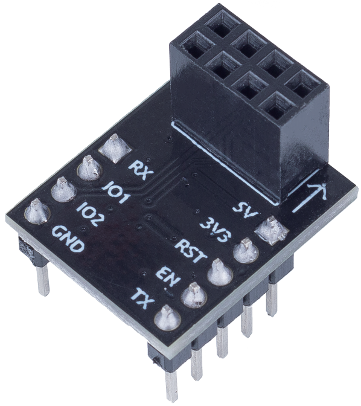

注釈
こんにちは、SunFounderのRaspberry Pi & Arduino & ESP32愛好家コミュニティへようこそ！Facebook上でRaspberry Pi、Arduino、ESP32についてもっと深く掘り下げ、他の愛好家と交流しましょう。
参加する理由は？
エキスパートサポート：コミュニティやチームの助けを借りて、販売後の問題や技術的な課題を解決します。
学び＆共有：ヒントやチュートリアルを交換してスキルを向上させましょう。
独占的なプレビュー：新製品の発表や先行プレビューに早期アクセスしましょう。
特別割引：最新製品の独占割引をお楽しみください。
祭りのプロモーションとギフト：ギフトや祝日のプロモーションに参加しましょう。
👉 私たちと一緒に探索し、創造する準備はできていますか？[ここ]をクリックして今すぐ参加しましょう！
ESP8266モジュール

ESP8266は、中国上海のEspressif Systemsが製造している、低価格なWi-Fiマイクロチップです。 内蔵されているTCP/IPネットワークソフトウェアとマイクロコントローラ機能を備えています。
2014年8月に西洋のメーカーたちの注目を集めたのは、第三者メーカーであるAi-Thinkerが製造したESP-01モジュールでした。 この小型モジュールは、マイクロコントローラがWi-Fiネットワークに接続し、Hayes式のコマンドを使用して簡単なTCP/IP接続を行うことを可能にします。 ただし、当初はこのチップやそれが受け入れるコマンドに関する英語の文献はほとんどありませんでした。 非常に低価格で、モジュール上の外部部品も非常に少ないことから、多くのハッカーがこのモジュールやチップ、ソフトウェアを探求し、中国語の文献を翻訳しました。
ESP8266のピンとその機能:

ピン |
名前 |
説明 |
|---|---|---|
1 |
TXD |
UART_TXD、送信; GPIO1 汎用入出力; 起動時にプルダウンは許可されない。 |
2 |
GND |
GND |
3 |
CU_PD |
高レベルで動作; 低レベルが供給された場合は電源オフ。 |
4 |
GPIO2 |
電源オン時は高レベルである必要があり、ハードウェアプルダウンは許可されない; デフォルトでプルアップ。 |
5 |
RST |
外部リセット信号、低レベルが供給された場合はリセット; 高レベルが供給された場合に動作（デフォルトは高レベル）。 |
6 |
GPIO0 |
WiFiステータスインジケータ; 操作モード選択: プルアップ: フラッシュブート, 操作モード; プルダウン: UARTダウンロード, ダウンロードモード。 |
7 |
VCC |
電源供給（3.3V） |
8 |
RXD |
UART_RXD、受信; GPIO3 汎用入出力。 |
ESP8266アダプタ


ESP8266アダプタは、ESP8266モジュールをブレッドボードで使用できるようにする拡張ボードです。 ESP8266自体のピンに完璧に合わせてあり、さらにArduinoボードから電圧を受け取る5Vピンも追加されています。統合されたAMS1117チップは、電圧を3.3Vに降圧してからESP8266モジュールを駆動します。
回路図は以下の通りです: